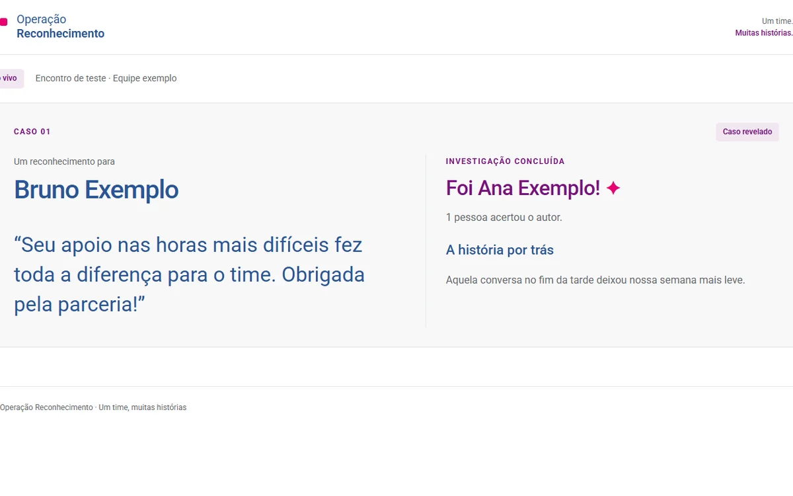

Estudo de caso
Operação Reconhecimento
Um aplicativo para uma confraternização pequena: colegas se reconhecem, descobrem quem escreveu o elogio e guardam memória do encontro.

O problema
O elogio, o jogo e a foto do evento costumam ficar em conversas separadas. Queria uma sala só, em português, que servisse antes, durante e depois do encontro, para até vinte pessoas.
O que ficou de pé
O organizador cadastra os nomes e cada pessoa entra pelo próprio convite. Antes do evento, dá para enviar até quatro elogios, cada um para um colega diferente. A edição nessa fase pede nova aprovação.
No dia, a sala tem o jogo ao vivo: a autoria fica escondida até a revelação, e a tela de apresentação não mostra revisão, mensagens privadas nem papéis de administração. Há votação de prêmios, separada do ranking. O mural publica memória com aprovação e consentimento. Esconder a autoria no mural não apaga o que já foi revelado no encontro.
Depois, o organizador decide o que fica e o que se apaga. Desativar a sala bloqueia leitura e escrita. Excluir é permanente e pede confirmação.
Como está feito
- React, TypeScript e Vite
- Supabase para sessão, banco e uma função de borda
- A sala guarda o estado numa versão só, para o comando atrasado não sobrescrever o novo
- A apresentação recebe um recorte do conteúdo, não o registro inteiro
- Fotos passam por pedido autenticado, com tamanho e metadados conferidos no servidor
O que continua com a pessoa
O organizador aprova elogios, conduz as rodadas e controla a retenção. Quem participa decide o que escreve e o que autoriza no mural. A lista de presença e os convites ficam fora deste site.